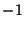
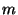

The sml class accepts three optional parameters. One is the sharing annotation that was explained earlier (see Section 4.3). The sharing annotation must be one of the two strings shared and private. If shared is specified, then dynamic state created by the compilation unit at link-time must be shared across invocations of CM.make or CM.autoload. The private annotation, on the other hand, means that dynamic state cannot be shared across such calls to CM.make or CM.autoload.
The second possible parameter for class sml is a sub-option list labeled setup and can be used to specify code that will be executed just before and just after the compiler is invoked for the ML source file. Code to be executed before compilation is labeled pre, code to be executed after compilation is complete is labeled post; either part is optional. Executable code itself is specified using strings that contain ML source text.
For example, if one wishes to disable warning messages for a specific source file poorlywritten.sml (but not for others), then one could write:
poorlywritten.sml (setup:(pre: "local open Compiler.Control\n\
\ in val w = !printWarnings before\n\
\ printWarnings := false\n\
\ end;"
post:"Compiler.Control.printWarnings := w;"))
Note that neither the pre- nor the post-section will be executed if the ML file does not need to be compiled.
The pre-section is compiled and executed in the current toplevel-environment while the post-section uses the toplevel-environment augmented with definitions from the pre-section. After the ML file has been compiled and the post-section (if present) has completed execution, definitions made by either section will be erased. This means that setup code for other files cannot refer to them, and neither can code that in the future might be entered at top level.
Finally, the third possible parameter for class sml is a sub-option labelled lambdasplit. It controls the cross-module inlining mechanism of SML/NJ.7 The value of the option can either be a non-negative decimal integer or one of the following words: default, on, off, or infinity. The effect of this parameter also depends on a system-wide setting (accessible via structure Compiler.Control.LambdaSplitting). In the following table, the per-file lambdasplit parameter is shown at the top and the system-wide default is shown on the left side. Table entries show the combined effect of the two: -1 means ``no inlinable exports from this file'', means ``as many inlinable exports as possible'', and a non-negative numeric value specifies some intermediate ``aggressiveness'' of the splitting engine.
| default | on | off | infinity | ||
| Off |  | ||||
| Default NONE | |||||
| Default (SOME ) |